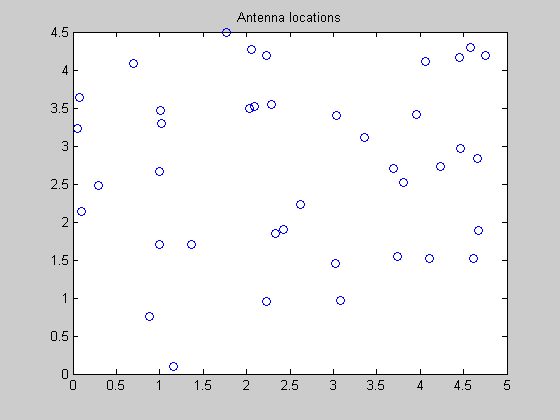
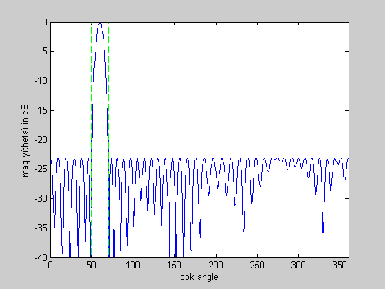
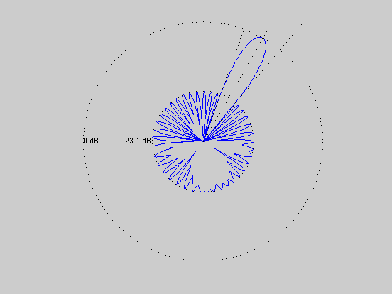

Minimize sidelobe level of an array with arbitrary 2-D geometry
ARRAY_GEOMETRY = '2D_RANDOM';
HAS_NULLS = 0;
lambda = 1;
theta_tar = 60;
half_beamwidth = 10;
if HAS_NULLS
theta_nulls = [95 110 120 140 225];
end
if strcmp( ARRAY_GEOMETRY, '2D_RANDOM' )
rand('state',0);
n = 40;
L = 5;
loc = L*rand(n,2);
elseif strcmp( ARRAY_GEOMETRY, '1D_UNIFORM_LINE' )
n = 30;
d = 0.45*lambda;
loc = [d*[0:n-1]' zeros(n,1)];
elseif strcmp( ARRAY_GEOMETRY, '2D_UNIFORM_LATTICE' )
m = 6; n = m^2;
d = 0.45*lambda;
loc = zeros(n,2);
for x = 0:m-1
for y = 0:m-1
loc(m*y+x+1,:) = [x y];
end
end
loc = loc*d;
else
error('Undefined array geometry')
end
theta = [1:360]';
A = kron(cos(pi*theta/180), loc(:,1)') + kron(sin(pi*theta/180), loc(:,2)');
A = exp(2*pi*i/lambda*A);
[diff_closest, ind_closest] = min( abs(theta - theta_tar) );
Atar = A(ind_closest,:);
if HAS_NULLS
Anull = []; ind_nulls = [];
for k = 1:length(theta_nulls)
[diff_closest, ind_closest] = min( abs(theta - theta_nulls(k)) );
Anull = [Anull; A(ind_closest,:)];
ind_nulls = [ind_nulls ind_closest];
end
end
ind = find(theta <= (theta_tar-half_beamwidth) | ...
theta >= (theta_tar+half_beamwidth) );
if HAS_NULLS, ind = setdiff(ind,ind_nulls); end;
As = A(ind,:);
cvx_begin
variable w(n) complex
minimize( max( abs(As*w) ) )
subject to
Atar*w == 1;
if HAS_NULLS
Anull*w == 0;
end
cvx_end
disp(['Problem is ' cvx_status])
if ~strcmp(cvx_status,'Solved')
return
end
min_sidelobe_level = 20*log10( max(abs(As*w)) );
fprintf(1,'The minimum sidelobe level is %3.2f dB.\n\n',...
min_sidelobe_level );
figure(1), clf
plot(loc(:,1),loc(:,2),'o')
title('Antenna locations')
y = A*w;
figure(2), clf
ymin = -40; ymax = 0;
plot([1:360], 20*log10(abs(y)), ...
[theta_tar theta_tar],[ymin ymax],'r--',...
[theta_tar+half_beamwidth theta_tar+half_beamwidth],[ymin ymax],'g--',...
[theta_tar-half_beamwidth theta_tar-half_beamwidth],[ymin ymax],'g--');
if HAS_NULLS
hold on;
for k = 1:length(theta_nulls)
plot([theta_nulls(k) theta_nulls(k)],[ymin ymax],'m--');
end
hold off;
end
xlabel('look angle'), ylabel('mag y(theta) in dB');
axis([0 360 ymin ymax]);
figure(3), clf
zerodB = 50;
dBY = 20*log10(abs(y)) + zerodB;
ind = find( dBY <= 0 ); dBY(ind) = 0;
plot(dBY.*cos(pi*theta/180), dBY.*sin(pi*theta/180), '-');
axis([-zerodB zerodB -zerodB zerodB]), axis('off'), axis('square')
hold on
plot(zerodB*cos(pi*theta/180),zerodB*sin(pi*theta/180),'k:')
plot( (min_sidelobe_level + zerodB)*cos(pi*theta/180), ...
(min_sidelobe_level + zerodB)*sin(pi*theta/180),'k:')
text(-zerodB,0,'0 dB')
text(-(min_sidelobe_level + zerodB),0,sprintf('%0.1f dB',min_sidelobe_level));
theta_1 = theta_tar+half_beamwidth;
theta_2 = theta_tar-half_beamwidth;
plot([0 55*cos(theta_tar*pi/180)], [0 55*sin(theta_tar*pi/180)], 'k:')
plot([0 55*cos(theta_1*pi/180)], [0 55*sin(theta_1*pi/180)], 'k:')
plot([0 55*cos(theta_2*pi/180)], [0 55*sin(theta_2*pi/180)], 'k:')
if HAS_NULLS
for k = 1:length(theta_nulls)
plot([0 55*cos(theta_nulls(k)*pi/180)], ...
[0 55*sin(theta_nulls(k)*pi/180)], 'k:')
end
end
hold off
Calling SeDuMi: 1103 variables (80 free), 1024 equality constraints
------------------------------------------------------------------------
SeDuMi 1.1 by AdvOL, 2005 and Jos F. Sturm, 1998, 2001-2003.
Alg = 2: xz-corrector, Adaptive Step-Differentiation, theta = 0.250, beta = 0.500
Split 80 free variables
eqs m = 1024, order n = 843, dim = 1184, blocks = 342
nnz(A) = 1022 + 109780, nnz(ADA) = 3062, nnz(L) = 2044
Handling 161 + 1 dense columns.
it : b*y gap delta rate t/tP* t/tD* feas cg cg prec
0 : 3.37E-002 0.000
1 : 1.46E-001 1.46E-002 0.000 0.4342 0.9000 0.9000 2.01 1 1 1.5E+000
2 : 1.63E-001 7.36E-003 0.000 0.5034 0.9000 0.9000 7.56 1 1 1.2E-001
3 : 1.15E-001 4.91E-003 0.000 0.6664 0.9000 0.9000 3.48 1 1 4.8E-002
4 : 9.66E-002 2.70E-003 0.000 0.5501 0.9000 0.9000 2.10 1 1 2.0E-002
5 : 9.26E-002 1.71E-003 0.000 0.6335 0.9000 0.9000 1.43 1 1 1.2E-002
6 : 8.60E-002 7.23E-004 0.000 0.4230 0.9000 0.9000 1.30 1 1 4.9E-003
7 : 8.28E-002 4.49E-004 0.000 0.6204 0.9000 0.9000 1.08 1 1 3.1E-003
8 : 7.90E-002 2.25E-004 0.000 0.5025 0.9000 0.9000 1.01 1 1 1.6E-003
9 : 7.68E-002 4.03E-005 0.000 0.1789 0.9124 0.9000 0.95 1 1 5.6E-004
10 : 7.63E-002 7.13E-006 0.000 0.1769 0.9650 0.9000 0.86 1 1 2.9E-004
11 : 7.49E-002 3.38E-006 0.000 0.4745 0.9257 0.9000 0.81 1 1 1.5E-004
12 : 7.44E-002 1.72E-006 0.000 0.5068 0.9362 0.9000 0.89 1 1 7.9E-005
13 : 7.41E-002 1.09E-006 0.000 0.6354 0.9564 0.9000 0.90 1 1 5.1E-005
14 : 7.39E-002 8.53E-007 0.000 0.7830 0.9156 0.9000 0.59 1 1 4.5E-005
15 : 7.35E-002 6.10E-007 0.000 0.7152 0.9000 0.9213 0.28 1 1 3.7E-005
16 : 7.33E-002 4.49E-007 0.000 0.7349 0.9240 0.9000 0.45 1 1 3.1E-005
17 : 7.30E-002 3.47E-007 0.071 0.7728 0.9000 0.9144 -0.19 1 1 2.9E-005
18 : 7.29E-002 2.95E-007 0.375 0.8503 0.9840 0.9000 0.03 1 1 2.7E-005
19 : 7.25E-002 2.03E-007 0.000 0.6900 0.9060 0.9000 -0.25 2 2 2.4E-005
20 : 7.23E-002 1.69E-007 0.339 0.8296 0.9562 0.9000 -0.12 2 2 2.2E-005
21 : 7.21E-002 1.29E-007 0.000 0.7647 0.9461 0.9000 -0.09 2 2 2.0E-005
22 : 7.19E-002 1.07E-007 0.426 0.8265 0.9549 0.9000 0.06 2 2 1.7E-005
23 : 7.16E-002 7.91E-008 0.000 0.7416 0.9143 0.9000 0.19 2 2 1.4E-005
24 : 7.14E-002 6.35E-008 0.215 0.8033 0.9661 0.9000 0.41 2 2 1.2E-005
25 : 7.13E-002 5.16E-008 0.000 0.8123 0.9634 0.9000 0.51 2 2 1.0E-005
26 : 7.11E-002 3.78E-008 0.327 0.7326 0.9635 0.9000 0.54 2 2 8.1E-006
27 : 7.09E-002 2.86E-008 0.238 0.7566 0.9661 0.9000 0.65 2 2 6.3E-006
28 : 7.08E-002 2.04E-008 0.301 0.7126 0.9594 0.9000 0.71 2 2 4.6E-006
29 : 7.07E-002 1.58E-008 0.103 0.7759 0.0000 0.9000 0.83 2 2 3.6E-006
30 : 7.05E-002 6.59E-009 0.000 0.4167 0.9000 0.9061 0.80 2 2 1.6E-006
31 : 7.04E-002 3.21E-009 0.000 0.4874 0.0000 0.9000 0.86 2 2 8.4E-007
32 : 7.03E-002 8.65E-010 0.000 0.2693 0.0318 0.9000 0.87 2 2 2.9E-007
33 : 7.03E-002 2.75E-010 0.000 0.3174 0.9000 0.7756 0.91 2 2 9.5E-008
34 : 7.03E-002 5.96E-011 0.000 0.2171 0.9000 0.8307 0.98 2 2 2.1E-008
35 : 7.03E-002 1.34E-011 0.000 0.2254 0.9000 0.8869 1.00 2 3 4.7E-009
iter seconds digits c*x b*y
35 32.7 Inf 7.0302334493e-002 7.0302336272e-002
|Ax-b| = 1.6e-012, [Ay-c]_+ = 3.3E-009, |x|= 1.1e+002, |y|= 4.6e-001
Detailed timing (sec)
Pre IPM Post
4.807E-001 3.271E+001 3.004E-002
Max-norms: ||b||=1, ||c|| = 1,
Cholesky |add|=0, |skip| = 2, ||L.L|| = 54.9682.
------------------------------------------------------------------------
Status (cvx_status): Solved
Optimal value (cvx_optval): 0.0703023
Problem is Solved
The minimum sidelobe level is -23.06 dB.
  